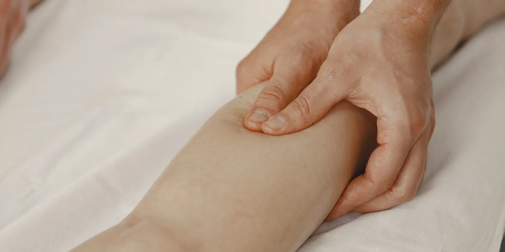

Lipedema y sueño: por qué el dolor nocturno interrumpe el descanso
Te acuestas agotada y en vez de descansar sientes que las piernas laten, arden o pesan más que en todo el día. Si te pasa seguido, no estás exagerando: lipedema y sueño tienen una relación real, y el dolor nocturno tiene explicación.

Te acuestas cansada, apagas la luz y en vez de quedarte dormida sientes que las piernas empiezan a latir, a arder o a pesar más que en todo el día. Si te pasa seguido, no estás exagerando: la relación entre lipedema y sueño es real, y tiene una explicación que va más allá de "será el cansancio del día".
Por qué el dolor de lipedema se siente peor de noche
Durante el día, moverte ayuda a que los líquidos no se queden estancados en las piernas: caminar, subir escaleras o simplemente cambiar de posición activa la circulación. Al acostarte pasan varias cosas a la vez. La sangre se redistribuye hacia el tronco, el tejido ya inflamado del lipedema queda sometido a esa presión extra, y el drenaje linfático, que en el lipedema suele estar alterado, tiene que trabajar sin la ayuda del movimiento.
Si usas medias de compresión durante el día, hay otro factor: al quitártelas para dormir, el líquido que estaban conteniendo queda libre para volver a acumularse, y muchas mujeres notan que justo en esa primera hora después de quitárselas el dolor se dispara. El cuerpo también entra en un ritmo distinto de circulación e inflamación cuando deja de moverse, y eso explica por qué el dolor que apenas se notaba en la tarde se vuelve protagonista justo cuando más necesitas descansar.
Un círculo que se retroalimenta: dolor, insomnio y más dolor
Dormir mal no es solo una consecuencia del dolor nocturno del lipedema. También lo empeora. La evidencia sobre dolor crónico en general muestra que la falta de sueño reduce el umbral del dolor y aumenta la sensibilidad al día siguiente, lo que a su vez dificulta volver a dormir bien.
Es un círculo que se alimenta solo.
Por eso cuidar el descanso no es un tema aparte del manejo del lipedema, es parte de él. Y cuando el cansancio se acumula noche tras noche, también pesa en el ánimo: hablamos de eso con más detalle en Vivir con lipedema: cómo cuidar también la salud emocional.
Lipedema y sueño: qué puede ayudarte a descansar mejor
No existe una fórmula única, pero sí medidas que suelen aliviar la noche cuando se combinan:
- Elevar un poco las piernas: un cojín bajo los pies, sin exagerar la altura, puede favorecer el retorno de líquidos mientras duermes.
- Evitar estar de pie sin pausa justo antes de acostarte: si la última hora del día la pasas parada cocinando o resolviendo pendientes, dale a las piernas 15 o 20 minutos de descanso antes de dormir.
- Cuidar la temperatura del cuarto: un ambiente fresco suele ayudar más que uno cálido, porque el calor tiende a intensificar la sensación de pesadez y dolor.
- Ropa de dormir suelta: nada que apriete a la altura de la ingle o de la rodilla y corte la circulación mientras duermes.
- Compresión nocturna, solo si tu médico la indica: existen prendas pensadas específicamente para la noche, distintas a las medias de compresión de uso diario. No todas las pacientes las necesitan ni las toleran bien.
Si quieres entender mejor la diferencia entre esas prendas y las medias que se usan de día, lo explicamos con calma en Compresión para lipedema: en qué se diferencia de la de várices.
Vale la pena decirlo con honestidad: elevar las piernas ayuda a la circulación, pero en el lipedema no siempre quita el dolor por completo. El líquido acumulado es apenas una parte de la causa; el tejido mismo, inflamado y sensible al tacto, también pesa. Es una medida que suma, no una que resuelve todo por sí sola.
En Seravena preferimos revisar primero cómo duerme la paciente y cuánto tiempo pasa de pie durante el día, antes de recomendar una prenda de compresión para la noche. Una compresión nocturna mal elegida puede incomodar más de lo que ayuda, y el objetivo es que descanses, no que pelees con la ropa toda la noche.
El contexto también importa
Medellín no tiene el calor extremo de la costa, y eso ya juega a favor de las piernas. Pero sí tiene jornadas largas: el tráfico, las cuestas y las escaleras hacen que buena parte del día se viva de pie o parada esperando un bus. Llegar a la noche con las piernas cargadas después de una rutina así es distinto a llegar tras un día tranquilo en casa, y vale la pena ajustar el descanso según cómo fue el día, no según una receta igual para todas.
Cuándo el dolor nocturno necesita revisión
El dolor típico del lipedema suele afectar ambas piernas de forma parecida y varía según el día, el calor o cuánto tiempo pasaste de pie. Si en cambio la hinchazón o el dolor nocturno son cada vez más frecuentes, no ceden con las medidas habituales, o notas que el tejido cambia de un mes a otro, vale la pena hacer una valoración con eco doppler para entender qué está pasando y descartar otras causas del dolor, como se explica en Dolor por lipedema: causas y manejo conservador.
Conocer bien tu caso es el primer paso para dormir mejor. Puedes revisar cómo trabajamos el manejo del lipedema en nuestro consultorio de El Poblado en la página de lipedema en Medellín, o escribirnos para agendar una valoración y armar un plan que tenga en cuenta tus noches, además del día.
Preguntas frecuentes
¿Por qué me duelen más las piernas al acostarme si tengo lipedema?
Al acostarte, la sangre se redistribuye hacia el tronco y el tejido del lipedema, que ya está inflamado, queda sometido a más presión. Si usas medias de compresión durante el día, al quitártelas el líquido que contenían puede volver a acumularse, lo que también intensifica la molestia en las primeras horas de la noche.
¿Elevar las piernas ayuda a dormir mejor con lipedema?
Puede ayudar a la circulación, sobre todo si mantienes los pies un poco más altos que el corazón con un cojín. Sin embargo, en el lipedema no siempre elimina el dolor por completo, porque el líquido acumulado es solo una parte de la causa: el tejido inflamado también influye.
¿Se puede usar compresión para dormir con lipedema?
Existen prendas de compresión pensadas específicamente para la noche, distintas a las medias de uso diario. No todas las pacientes las necesitan ni las toleran igual, así que conviene que un profesional valore tu caso antes de usarlas.
¿Cuándo debo preocuparme por la hinchazón o el dolor nocturno?
Si la hinchazón o el dolor nocturno se vuelven más frecuentes, no ceden con las medidas habituales o notas cambios en el tejido, vale la pena una valoración. Y si el dolor aparece de golpe en una sola pierna, con hinchazón que crece rápido, calor o enrojecimiento, busca atención médica sin demora porque podría ser otra causa distinta al lipedema.